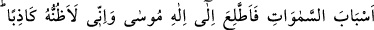
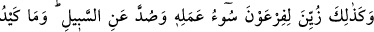
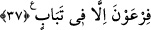

Kasas sûresinde geçtiği üzere: “Haydi benim için çamur üzerine ateş yak ve bana
bir kule yap” (el-Kasas 28/38) demişti. Aynü’l-me’ânî’de de geçtiği üzere kabirlerde
pişmiş çamur (tuğla) kullanılması işte bu sebeple mekruh kabul edilmektedir. Yâni bu
maddeyi ilk olarak kullanan Firavun olduğu için. “Sarh” kelimesi ise “bir şey açıkça
ortaya çıktı” anlamındadır.
“Belki yollara erişirim,”
37. Göklerin yollarına (erişirim de) Mûsâ’nın Tanrısı’nı görürüm! Doğrusu ben
onu, yalancı sanıyorum, dedi. Böylece Firavun’a, yaptığı kötü iş süslü gösterildi ve
yoldan saptırıldı. Firavun’un tuzağı tamamen boşa çıktı.
“Göklerin yollarına erişirim de” ifadesi, bir önceki âyette bahsedilen “yolları”
açıklamaktadır.
“Yollar” kelimesi ilkin müphem bırakılıp sonra izah edilmiştir. Böylece bunların ne
kadar önemli olduğu gösterilmekte, dinleyiciler bunları öğrenmeye teşvik edilmektedir.
“Mûsâ’nın Tanrısı’nı görürüm!”
Tâcü’l-masâdir’de der ki: “Ittılâ”, vâkıf olmak, haberdar olmak anlamına gelir.
Aynü’l-me’ânî’ye göre “ıttılâ”, bir şeyi görebilmek gayesiyle yükselmek demektir.
“Doğrusu ben onu”, Mûsâ’yı, peygamberlik dâvâsında “yalancı (kâzib)
sanıyorum.”
Fakir (Bursevî) der ki: Burada Firavun Mûsâ (a.s.)’a ilk gönderildiği zaman dediği
gibi “kezzâb” demedi. Çünkü bu yerde konuşan sadece Firavun’dur. “Kezzâb” dediği
yerde ise (bk. el-Mümin 40/24) mübalağa sîgası Firavun, Hâmân ve Kârun’un birlikte
söylediği bir söz olmasındandır.
Biliniz ki müfessirlerin çoğu Firavun’un bu sözünü zâhirine hamledip kulenin nasıl
yapıldığıyla ilişkili olarak Kasas sûresinde geçen hikâyeyi anlatmışlardır. Bazıları ise
bunun, gerçekten oldukça uzak bir ihtimal olduğunu belirtmişler ve şöyle demişlerdir:
Şayet Firavun bir deli ise ne onun sözlerinden bahsedilmesi doğru olur; ne de kendisini
hakka davet edecek bir peygamber gönderilirdi. Aklı başında biri ise, bir insanın
dağlardan daha yüksek bir binâ yapamayacağını ve dağın eteğinden de bakılsa
zirvesinden de bakılsa gökyüzünün aynı şekilde görüleceğini bedihî olarak bilirdi.
Dolayısıyla her iki halde de Firavun’a böyle bir talebin zâhirî anlamıyla isnâdı doğru
olmaz. Bu görüş sahipleri Firavun’un bu sözüyle ilgili olarak söz konusu talebi akla
biraz daha yaklaştıracak iki açıklama yapmaktadır: